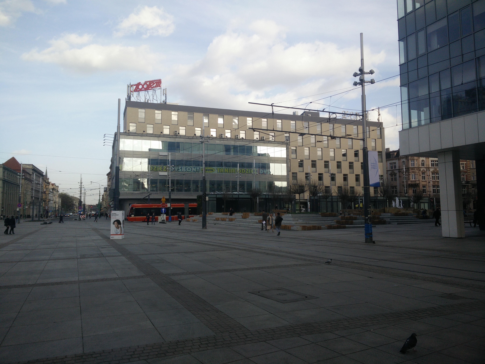
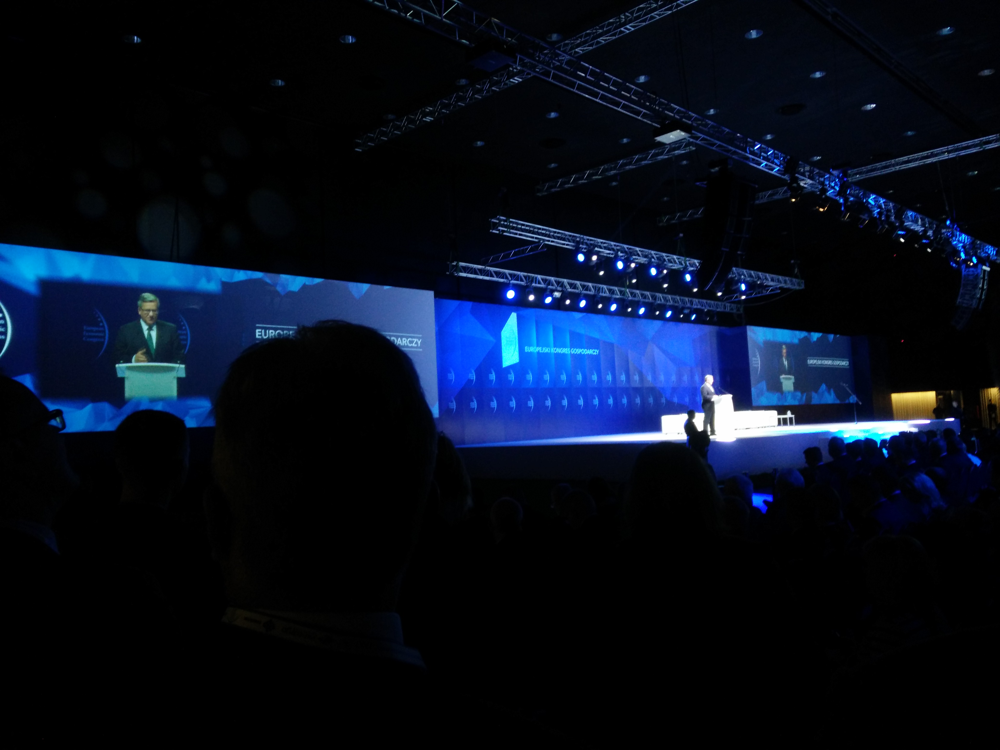

Speaking at European Economic Congress 2015
Posted on 30/06/2015 by Jakub Langr
Posted in non-technical
I was recently invited to speak at European Economic Congress in Poland partially thanks to the fact that I was working at Aspen Institute Prague back in the summer of 2011. When I saw the line-up for my panel I was a bit terrified: why should anyone care what I had to say.

To Poland!
When I arrived at the Katowice airport, there was even a guy standing with my name (laminated!) on it waiting to escort me to the hotel. That freaked me out a little bit. Katowice was an interesting city: marred by Communist rule and somewhat this felt like a journey back in time -- recalling my childhood days in Prague. Poland was noticeably different from Czech Republic, but was eerily similar in some of the functionalist buildings and social interaction.
I've never properly been to Poland before except for the couple of times I have barely crossed the border like when I was climbing Sněžka, so it was good to have this opportunity to visit! Unfortunately and perhaps fittingly with the atmosphere of a predominantly communist era city, it was quite cold the entire time.
|  |  |
The conference itself was held in a fabulous newly built Conference Center in the middle of Katowice. It was started off by the then President of Poland Bronisław Komorowski. Despite not being explicitly on the agenda, he started discussing the issue of entrepreneurship quite a lot: the issue of retaining talent, attracting investors and so on. Although there were no concrete plans, I still appreciated this as a very important signal as well as the recognition that entrepreneurship is hard and if we want to succeed we must embrace failure.
This topic was great because that is one of the topics I am passionate about. I think that it is one of the great equalisers in a society as well as an important skill for anyone to pick up. The trouble with entrepreneurship in Europe though is that the social attitudes it encourages are actively decreasing the pool of potential entrepreneurs. Like the fact that our educational systems does not encourage students to experiment and fail at all: neither in the Czech Republic nor at my University (a top UK university). I am fairly sure that most of my teachers and classmates thought I was incredibly arrogant while I was only trying to follow evidence and best practice from people around the world. It took courage to do that and sure I am sure that as a person I have an incredible amount to work on, perhaps more than most, but I still think that I was politely ignored at best and actively discouraged at worst is indicative of why Europe has no major successful start up to speak of with the possible exception of Spotify.
I mainly talk about digital entrepreneurship, because that is where most of my expertise comes from but I think that ultimately, this should generalise to most areas. While I value greatly that the policy makers have taken on such an challenging topic, I have to highlight that the absence of anyone except old white men among the attendees and the whole spirit of the conference was very much in the style of a conference for them, thereby missing almost the entire population and I really hope that business is more inclusive that that. Or at the very least it should be.
In terms of discussion, obviously, I was not expecting something like my experience at Web Summit Dublin, which specialises on tech entrepreneurship, but there was also a massive disconnect between a lot of people were saying and what really needed to happen. Which is a shame, because I think that there is so much direct and obvious stuff that the policy makers could do to ease entrepreneurs' lives: less bureaucracy, encouraging educational system that rewards experiments and reasonable welfare state that does not make failure too costly.
Panel! (SLightly egotistical pictures, don't judge me)
Source of images: PTWP SA
All of the typical cliches were then repeated during my panel discussion: how it would be so great to have more European entrepreneurship, young people should do it (which is also not true: anyone has a shot!) and why do all the smart people go abroad? Unfortunately, the reality that it is often too costly financially and socially (also in terms of exit options) to create a new company in Europe and the real issues were sometimes completely missing. On the plus side, during the discussion I got a few shout-outs from others such as "As the gentleman on the far-right [of the panel] noted--without alluding to his political views--the young need to be willing to fail", as mentioned by the German ambassador. Though I was the only one to laugh at that remark, which was quite embarrassing.
In summary, I think that it was great that we discussed this topic at all, but I think that Europe--if it is serious about entrepreneurship--needs to examine systematic social causes and start doing rather than merely talk.
Overall, though, I had a great time in Poland. I think I still learnt loads from this conference and I had an opportunity to have a drink with some of my great former colleagues from Aspen!
Artificially Intelligent Business
Lots of people are arguing about the theoretical nature of what AI means many years down the road, but I would like to focus on the AI commercial products in the next 2-5 years. I'd also bring
Kaggle Struggle
For those of you that are not compete data nerds, I occasionally venture into the world of Kaggle: a competitive data science website where everyone from the
...especially about the future
A year has passed since I started to make predictions for this fascinating project run by Philip Tetlock a man that has dedicated about 30 years of his life to understanding geo-political forec
Comments